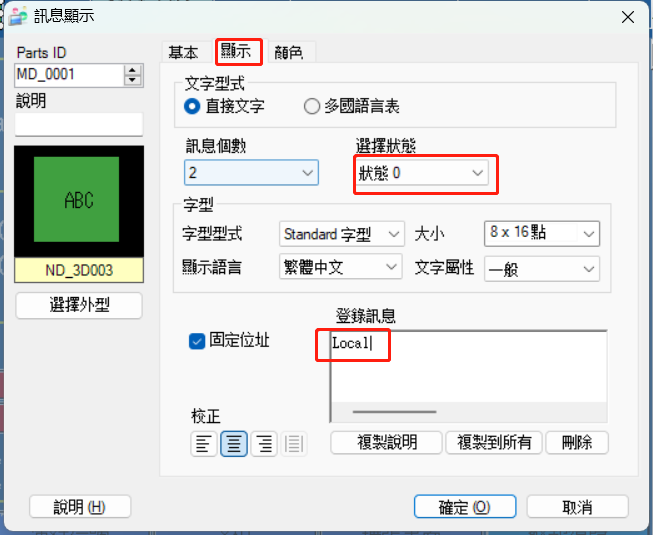
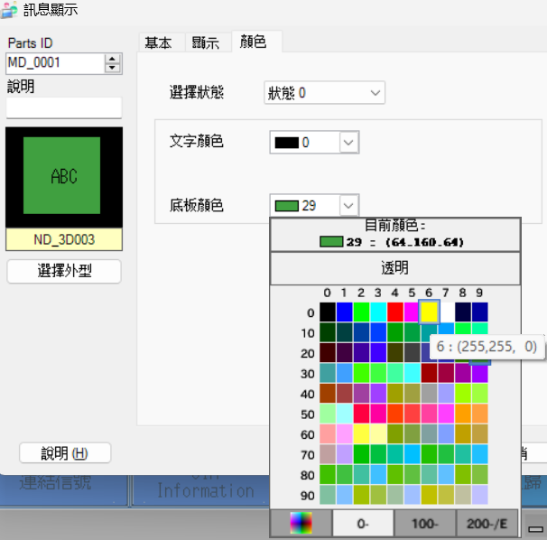
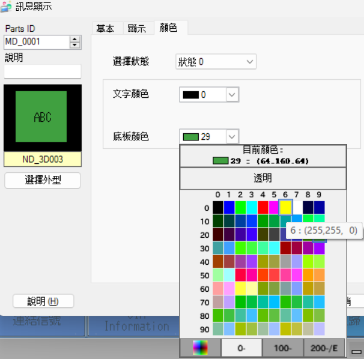
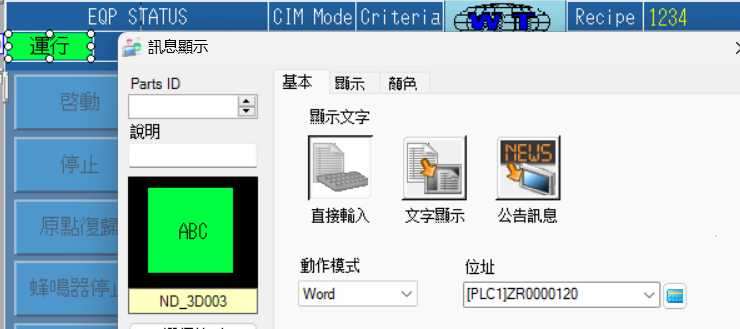

标准功能
| 序号 | 设备采集及控制功能 | 设备信息 | 说明 | |
|---|---|---|---|---|
| 1 | 设备模式监控功能 | 下发 | 所有设备 | 设备支持离线、在线模式；离线指 IoT 系统不能控制设备，但是都可以抓取数据。 |
| 2 | 设备联网状态监控功能 | 数采 | 所有设备 | 设备及 IoT 都需要各自监控联网状态。 |
| 3 | IoT 联网状态监控功能 | 数采 | 所有设备 | 设备及 IoT 都需要各自监控联网状态。 |
| 4 | 设备状态监控功能 | 数采 | 所有设备 | 设备状态一般包括运行、待机、故障、停止、保养等状态。 |
| 5 | 设备警报报告功能 | 数采 | 所有设备 | 设备报警的信息采集。 |
| 6 | 远程信息下发功能 | 下发 | 所有设备 | IoT 系统下发信息给设备。 |
| 7 | 远程时间同步功能 | 下发 | 所有设备 | IoT 同步设备的日期和时间。 |
| 8 | 设备生产数据上报 | 数采 | 所有设备 | 设备生产过程中的实时生产数据。 |
设备模式监控功能
在人员按了 Local 按钮的一瞬间，且当前设备模式为 Remote 模式，就将模式切换为 Local 模式；反之，在人员按了 Remote 按钮的一瞬间，且当前设备模式为 Local 模式，就将模式切换为 Remote 模式。
Local：
L264（开关功能）=ZR112为 0（当前设备模式显示）=L270（指示灯功能）
Remote：L262（开关功能）=ZR112为 1（当前设备模式显示）=L271（指示灯功能）
L262、L264为人机上交互的按钮。
L262为 Remote 按钮，用于切换设备模式为在线模式；L264为 Local 按钮，用于切换设备模式为离线模式。ZR112为人机上显示当前设备模式的点位。按照设备交互文档中所说，1表示在线，0表示离线。所以我们需要将人机上这一点位作出以下修改：
- STEP 1: 点击右上角编辑页首，双击 CIM Mode 下
Remote显示其属性。
- 点击
显示,状态0时的登录讯息修改为Local；状态1时的登录讯息修改为Remote。 
- STEP 2: 点击
颜色，修改状态1的底板颜色为29；修改状态0的底板颜色为6。 
 - STEP 3: 最后点击
确定完成此次修改。
L262、L264为开关功能的点位，随着人员的点按而 ON/OFF，而切换到 Remote 模式时，指示灯功能的点位会常 ON，表示当前模式为 Remote 模式。Local 模式也一样。所以需要将 Local 模式和 Remote 模式的指示灯功能分别修改为L270和L271。

设备联网状态监控功能
IoT 监控设备上ZR3005的值是否持续一秒加 1，若未能监测到，则表示设备断网。ZR3005的值达到 65535 后会被置 0，然后重新开始一秒加 1。
IOT 联网状态监控功能
IOT 联网时，每秒加 1 写入ZR3010,Remote 模式下实时将ZR3010的值与之前写入的值进行比较，若 9 秒内仍未发生变化，设备判断 IOT 断网，发出警报并蜂鸣。警报点位一般为L2021。
之前写入的值为
D0的值。
IOT 断网警报不会影响机台继续生产，且可以通过按下机台上的重置按钮来消除警报及蜂鸣。L4097就是 I/O 点位置换后的重置点位，对应了机台上的重置按钮。
I/O 点位置换
将
X200到X23F置换为L4096到L4159


K4X200这是三菱的组合位元件，三菱系列的 PLC 可以这种位元件组的形势接收或发送二进制数据，一个位元件组（K1X200）由 4 个连续的 bit 组成。
KnMm格式的数据意思是从Mm开始的n*4位所组成的数据，n 可以为 1，2，3，4，形式可以是KnMm，KnXm，KnYm。
举个 🌰
K2X0——从X0开始的2*4位所组成的数据，也就是X7、X6、X5、X4、X3、X2、X1、X0这 8 位所组成的数据。K1M10——从M10开始的1*4位所组成的数据，也就是M3、M2、M1、M0这 4 位所组成的数据。
设备状态监控功能
设备状态共五种，详情见下表：
| 运行 | 故障 | 闲置 | 停机 | 保养 |
|---|---|---|---|---|
| 原点复归并启动 | 出现异常并停机 | 启动后流片间隔 | 无原点复归，无启动 | 原点复归，无启动 |
ZR120 = 0 |
ZR120 = 1 |
ZR120 = 2 |
ZR120 = 3 |
ZR120 = 4 |
ZR120为人机上点位 
设备警报报告功能
与上面提到的I/O 点位置换同理，将L2000到L2639的警报实时传送到ZR3700到ZR3739，共计 40 word（即 640 bit）。
远程信息下发功能
通过索引触发远程下发信息在人机上的显示、蜂鸣器及三色灯，内容可支持显示 128 个 ASCII 字符。同时，若 IOT 下发的消息类型是间隔消息，需要提供间隔秒数；若 IOT 下发的消息类型是持续消息，则蜂鸣器会长鸣。两个消息类型都可由人员手动解除。
ZR60005为人机上点位，用于显示信息的内容ZR2029.1为人机上点位【Confirm】，用于手动确认信息已收到，可解除信息的显示、蜂鸣器及三色灯。
ZR3837为 IOT 下发的索引，若当前索引与上一次索引（即ZR3838）不同，则会触发信息框的显示。

CIM Message 信息框的画面编号为 5，所以视窗画面D2517的值为 5。
视窗显示位置的D2518、D2519为 CIM Message 信息框显示的 X、Y 坐标。

在人员手动按下【Confirm】按钮后（即ZR2029.1这一软元件位 ON 了之后），将上面的视窗控制、视窗画面和视窗显示位置均清零，同时清空信息内容与消息类型，便可达到人员手动可解除信息显示、蜂鸣器及三色灯的效果。
由于三色灯及蜂鸣器是根据消息类型触发，所以一旦消息类型被清空，三色灯及蜂鸣器也会随之解除。 增加 IOT 对消息的间隔秒数（即
ZR3836）设置之后将
B1501 T95、B1502并联到蜂鸣器及三色灯的输入条件中即可。
远程时间同步功能
通过比对当前索引值与上一次索引值，比对结果为不一致时触发时间同步功能。从ZR4290到ZR4296共 7 个点位，依次为：年、月、日、时、分、秒、星期，增加范围控制（如分、秒只可为 0 至 59，时只可为 0 到 23 等）。
需要同步为
ZR4290到ZR4296指定的时间日期，并显示到SD210到SD216
对于星期（即
ZR4296），0：星期日，1 到 6：星期一到星期六
DATEWR是时间的写入，并不会随着实际时间而一秒一秒的改变显示的时间。

它写入到DATERD后的点位（如SD210），而DATERD后的点位才会与实际时间一样改变。
设备生产数据上报
此功能只需要提供点位供 IOT 采集数据，无需 PLC 程序的编写，故不作解释。
放板机
| 序号 | 设备采集及控制功能 | 设备信息 | 说明 |
|---|---|---|---|
| 9 | 设备启停控制 | 所有设备 | 上板机能接收 IoT 下发的停机/开机指令。 |
| 10 | 是否存在载具信号 | 所有设备 | 上板机中没有载具的时候，需产生空料信号。 |
| 11 | 采集 Cassette ID | 所有设备 | 上板机扫描 cassette ID 时，需将 cassette ID 信息上传，如果扫描不成功需要报警。 |
| 12 | 切换生产信息 | 所有设备 | 上板机在收到 IoT 下发的新 cassette 信息时，设备然后 cassette 投入数量清零，并重新计数 |
| 13 | 生产信息切换完成指令 | 所有设备 | 当设备切换生产信息完成时上报给 IOT。 |
| 14 | 设备投入 Panel 信号 | 所有设备 | 设备投入 Panel 信号 |
| 15 | 设备产出 Panel 信号 | 所有设备 | 设备产出 Panel 信号 |
| 16 | 删除待生产虚拟 Panel 信息指令 | 所有设备 | 删除待生产虚拟 Panel 信息指令 |
| 17 | 控制取放板 | 所有设备 | 上板机能接收 IoT 下发的投板信号。（0：不投板，1：投板） |
| 18 | 镭雕请求条码 | 所有设备 | 上板机检测到板子到达镭雕位置时，触发向上“请求条码”。（镭雕打码） |
设备启停控制
由 IOT 触发设备的启动与停止。需要注意的是：厂内威家骅设备在启动前都需要进行原点复归。
原点复归
IOT 请求启动设备 ➡️ 人员确认设备原点复归完成 ➡️
B451被设置为 ON➡️L256被设置为 ON➡️ 启动后将L256设置为 OFFIOT 请求停止设备 ➡️
B450被设置为 ON➡️L257被设置为 ON➡️ 停止后将L257设置为 OFFL256为人机上启动按钮；L257为人机上停止按钮。
设备完成启动或停止的动作，经过 2s 延迟之后将回复代码（ZR30020.0）设置为 1；
若没有完成启动或停止的动作，则经过 2s 延迟之后将回复代码（ZR30020.0）设置为 0。
回复代码（ZR30020.0）之后，将交握回复设置为 ON，同时将B450和B451恢复到 OFF 状态。
是否存在载具信号
机台工作位上一般都会有检测是否存在载具的感应器。 感应器 ON 则表示存在载具；感应器 OFF 则表示不存在载具。
有些程序中会将感应器输出到ZR2025.5这个点位（可能是为了规范性吧），如果有ZR2025.5这一点位，直接用这个点位就好。如果没有，也可以选择直接用感应器。
感应器判断无载具时，会将
ZR39900置0，同时将D7230(不存在载具)置1，0.2s 延迟之后将索引值ZR41405改变。感应器判断有载具时，会将
ZR39900置1，同时将D7231(存在载具)置1，0.2s 延迟之后将索引值R41405改变。IOT 采集是否存在载具的信号的时机点是索引值发生了变更。
采集 Cassette ID
情况一：如果读取 Cassette ID 3 次后仍然失败，则发出报警L2450。
情况二：如果读取 Cassette ID 成功，则设定好的D8105到D8109范围内会存储 Cassette ID。读取完成后M1500会 ON,读取到的 ID 也会传送到ZR3930开始的 10 个 word。0.1s 延迟后将索引值变更，IOT 监控到索引值变更，就会采集 Cassette ID。
PLC 与 Reader 的通讯设置完毕后，还需要在 PLC 程序中添加触发和采集 Reader 的读取结果的程序，这一部分在IOT_MES各功能.gxw文件中的M98部分有完整的程序，可直接复制添加到程序中。
- Local 状态下，机台升到工作位，按下 Reload 按钮可触发并采集 Reader 的读取结果，读取完成后
M4360 ON；- Remote 模式下，机台升到工作位即可触发并读取 Reader 的读取结果，读取完成后
M4360 ON。- 工作位上无载具或按下 Reload 按钮的一瞬间，会将
M4360 OFF。
以下几种情况会将将读取完成信号M1500及 IOT 采集读取结果的ZR3930开始的 10 个 word 的点位清空复位：
- 对于放板机来说，完板时
- 对于收板机来说，满板时
- 无载具在工作位时
- 按下人机上 Reload 按钮时
切换生产信息 & 生产信息切换完成指令
IOT 先请求下发生产信息，下发的生产信息会给到预生成中，在满足切换条件后将预生成的生产信息切换为在制。切换完成后回复 IOT 切换完成，且将切换完成的索引值变更，IOT 在该索引值变更后会采集在制的生产信息。
生产信息
预生成
相当于第三方，下发的生产信息先给到预生成，在满足切换条件后再切换为在制（在制的生产信息会显示到人机界面中），所以预生成有没有切换为在制，可以从人机界面上看到，下图中红色框内即在制的生产信息。
生产信息对应的IOT 下发点位、预生成点位、在制点位如下，也可在设备交互文档-汇总-PLC.xlt中找到。
满足条件的“条件”是指什么？
这是 IOT 给出的描述： 当设备投入板带有最后板信号触发：
- 设备先判断是否需要切换配方，需要切换配方，需要等到上一个载具全部投产完成，才切换载具信息。
- 是否往下出板信号，当为 0 时设备最后板投产完成，需要设备自身控制禁止出板。为 1 时设备则不需要管控。
关键词是是否切换配方、最后板投产完成和控制禁止出板。
总结
- 设备内无板
- IOT 下发A 工单的生产信息到
ZR3900开始的点位，由设备将A 工单的生产信息数据传送到ZR50000开始的点位，再切换到在制D7170开始的点位。
- IOT 下发A 工单的生产信息到
- 设备内有板
- 切换配方
- IOT 下发B 工单的生产信息到
ZR3900开始的点位，由设备将B 工单的生产信息数据传送到ZR50000开始的点位，等待A 工单的板子全部产出后再切换到在制D7170开始的点位，包括需要切换的配方。
- IOT 下发B 工单的生产信息到
- 切换配方
- 设备内有板
- 不切换配方
- IOT 下发B 工单的生产信息到
ZR3900开始的点位，由设备将B 工单的生产信息数据传送到ZR50000开始的点位，由于不切换配方，所以不必等待A 工单的板子全部产出后再切换到在制D7170开始的点位。
- IOT 下发B 工单的生产信息到
- 不切换配方
设备投入 Panel 信号
在 IOT 下发允许投板的指令后，手臂才会下降吸板，从步进位中找到合适的点位作为投入 Panel 信号的时机点，0.1s 延迟后将投入的索引值变更。IOT 监控到该索引值变更后便会采集投入 Panel 的帐。
帐
料
实体的板子
有料无帐
简单来说，就是在投入时没有该板子对应的帐。

从上图中可以看出来，放板机的虚拟 Panel ID以及是否最后一块板是由设备自己生成的。
虚拟载具码
ZR450，即 Cassette Code，是 IOT 在下发生产信息时就会提供的数据；虚拟 Panel ID
ZR451，是在合适的时机点由设备自动生成，每投入一块板子，ZR451便会自动加 1，放板片数到达后将其清零；是否最后一块板，完板时将此信号赋值为 1
设备产出 Panel 信号
与产出类似，从步进位中寻找合适的点位作为产出 Panel 信号的时机点，或者使用出料感应器的下降沿作为此时机点，0.1s 延迟后将产出的索引值变更。IOT 监控到该索引值变更后便会采集产出 Panel 的帐。
对于放板机来说，从投入到产出是一个完整的带帐过程，期间还包括可能存在的拔片，即删除设备待生产虚拟 Panel 信息指令。
带帐的逻辑
对于放板机来说，在现场实际作业中，板子会被装在载具中，开始作业后载具上升到工作位 ➡️ 手臂移载到工作位 ➡️ 手臂下降吸板 ➡️ 确认吸取到板子 ➡️ 手臂上升 ➡️ 手臂移载到输送滚轮上方 ➡️ 手臂下降放板 ➡️ 手臂放板后上升 ➡️ 输送滚轮将板子输送至下一段。
在上面这一段大致的流程中，板子的位置先从载具中➡️手臂➡️输送滚轮➡️产出。
前半部分（载具中➡️手臂）可以认为是投入，后半部分（输送滚轮➡️产出）可以认为是产出。
而带帐的逻辑则是根据实体板子的动作，将帐从载具中➡️手臂➡️输送滚轮➡️产出。
这里有必要引入一个带帐相关的点位规划。
| 手臂 | CV1 | CV2 | CV3 | CV4 | CV5 | CV6 | CV7 | CV8 | CV9 |
|---|---|---|---|---|---|---|---|---|---|
ZR40000 |
ZR40010 |
ZR40020 |
ZR40030 |
ZR40040 |
ZR40050 |
ZR40060 |
ZR40070 |
ZR40080 |
ZR40090 |
| 暂存 1 | 暂存 2 | 暂存 3 | 暂存 4 |
|---|---|---|---|
ZR45000 |
ZR46000 |
ZR47000 |
ZR48000 |
删除待生产虚拟 Panel 信息指令
IOT 在ZR41450以及ZR41451中分别写下待删除的虚拟载具码和虚拟 Panel ID，若在设备中循环一次 并能找到与此一致的，便会将设备中存储的虚拟载具码和虚拟 Panel ID 清零，达到删除的效果。
这一段用到了FOR-NEXT指令，具体可从同文件夹内的Q系列共用指令.pdf中找到解释。
IOT 给出待删除的 Panel 信息，并发出请求，设备收到交握请求后B474 ON开始循环找出与待删除的 Panel 信息一致的部分，并将其清零，RST B474，交握回复B409。至此完成此功能。
这段有一个Z0，这是变址寄存器中的点位，可以理解为变量。
控制取放板
IOT 控制放板机是否投板，如果给ZR3850为 1，则投板，给 0 则不投板。离线模式下不受 IOT 控制，默认允许投产（ZR41）。
这部分功能的主要逻辑就是在手臂下降吸板的动作之前多加上 IOT 允许投板的条件，即M350例中那样，而M350则是为离线模式多做一个条件卡控（猜测）。
除了 IOT 控制的放板机是否投板外，还涉及到载具状态ZR251，大多数情况下需要ZR251的值为 2 或 3 时，才可正常生产。
共 6 个状态，分别如下表所示：
| 0 | 1 | 2 | 3 | 4 | 5 |
|---|---|---|---|---|---|
| No Cassette Exist | Waiting for Cassette Data | Waiting for Processing | In Processing | Process Paused | Process End |
不过从人机上看这里的点位其实是
ZR2501，并不是ZR251。关于这个疑问，我请教过别人，给的解释是说，这两个其实是一样的，ZR2501 = ZR251。
镭雕请求条码
此功能为镭雕机专用，而镭雕机现在已经不对接 MES，故在此不做解释。
收板机
| 序号 | 设备采集及控制功能 | 设备信息 | 说明 |
|---|---|---|---|
| 9 | 设备启停控制 | 所有设备 | 收板机能接收 IoT 下发的停机/开机指令。 |
| 10 | 是否存在载具的信号 | 所有设备 | 收板机没有载具的时候，需产生空料信号。 |
| 11 | 采集 Cassette ID | 所有设备 | 收板机扫描 cassette ID 时，需将 cassette ID 信息上传，如果扫描不成功需要报警。 |
| 12 | 切换生产信息 | 所有设备 | 收板机在收到 IoT 下发的新 cassette 信息时，设备然后 cassette 投入数量清零，并重新计数 |
| 13 | 生产信息切换完成指令 | 所有设备 | 当设备切换生产信息完成时上报给 IOT。 |
| 14 | 设备投入 Panel 信号 | 所有设备 | 设备投入 Panel 信号 |
| 15 | 设备产出 Panel 信号 | 所有设备 | 设备产出 Panel 信号 |
| 16 | 删除待生产虚拟 Panel 信息指令 | 所有设备 | 删除待生产虚拟 Panel 信息指令 |
| 19 | 设备待生成 Panel 信息写入 | 所有设备 | 设备生产 Panel 信息写入 |
| 20 | 收板机退 Port 信号 | 所有设备 | 收板机退 PORT |
| 21 | 满盘数量修改 | 所有设备 | 收板机在收到 IoT 写入满载数量，只要写入的数据小于当前收板载具已收的数量就可以实现更改。 |
序号为 9、10、11、12、13、16 的功能收放板机相同，在此不多做赘述。
设备投入 Panel 信号
当板子完全进入收板机时，设备将待生成的帐传送到投入点位ZR41500和输送滚轮ZR40010开始的 3 个 word，并给出板子已投入信号B452；设备若没有待生成的帐，则认为是有料无帐，发出L2435的警报并鸣笛。有料无帐时需要将投入及产出的虚拟 Cassette Code清零，以便 IOT 做交互逻辑处理。B452 ON 0.1s 后将投入的索引值ZR41503变更，IOT 监控到索引值变更后便会来采集投入的 Panel 信息。
收板机的投入 Panel 信号与放板机不同，收板机投入的帐是由 IOT 提供到待生成，设备再自行从待生成中传送到投入点位的。放板机的则是自行生成的帐。
设备产出 Panel 信号
由于收板机比放板机多出一个读板子的 Reader，所以收板机在产出时需要将读到的 Panel ID 传送到ZR41810开始的 15 个 word，所以找到一个合适的产出的时机点就显得尤为重要。产出时，产出信号B453 ON，0.1s 延迟后将产出的索引值进行变更，IOT 监控到索引值变更便会采集产出的 Panel 信息。
合适的产出时机点 读板子的 Reader 大部分都装在了输送滚轮之下，在拍板（拍板，一种设备动作）之后会去触发
M90读板子的 panel id，所以一片板子的产出时机点应该在它与下一片拍板之间，依据现场机台动作的实际情况来选择。可以考虑移载至放板位或者吸板完成后翻板。触发
M90相关程序在IOT_MES各功能.gxw中的低M90或高M90，厂内一般都使用DM60（低阶Reader），所以一般只要从低M90中直接复制即可。
设备待生成Panel信息写入
由IOT写入待生成的帐，并将索引值ZR41603变更，设备监控到索引值发生变更，则将IOT写入待生成的帐由ZR41600传送到ZR41700，0.2s后将索引值ZR41603与ZR41703同步，为下一次IOT写入待生成的帐做准备。
收板机退Port信号
退Port时将信号B454 ON，如果退Port了ZR4120.0 ON，反之则OFF。退Port（即收板机满板）后，将索引值ZR4121变更，IOT监控到索引值变更，就会采集该信号。此外，满板时会有满板警报，将满板警报消除之后，会将作业片数D2004也清零。
此处和收板机的满载水位ZR4100有关，收板机的满载水位也是由IOT控制，若满载水位与作业片数D2004相同，则收板机会退Port。
满盘数量修改
只有在IOT给定满载水位ZR4100大于等于作业片数D2004，并给出交握请求B404时才会设定设备的满载水位成功，并给出修改成功的信号ZR4101.0 ON，若小于作业片数D2004则修改失败ZR4101.0 OFF。无论修改成功或失败，都会在1s延迟后给出交握回复B405。

中间段
| 序号 | 设备采集及控制功能 | 设备信息 | 说明 |
|---|---|---|---|
| 9 | 设备启停控制 | 所有设备 | IoT控制设备运行或停止 |
| 12 | 切换生产信息 | 所有设备 | 当设备生产产品的载具发生变化的时候进行触发。 |
| 13 | 生产信息切换完成指令 | 所有设备 | 当设备切换生产信息完成时上报给IOT。 |
| 14 | 设备投入 Panel 信号 | 所有设备 | 当Panel板到达设备入口时触发 |
| 15 | 设备产出 Panel 信号 | 所有设备 | 设备在产出Panel板时需要上传IOT 虚拟Panel码信息 |
| 16 | 删除待生产虚拟 Panel 信息指令 | 所有设备 | IOT下发 虚拟载具码 + 虚拟Panel码，设备根据两个条件删除待完成队列中的数据 |
| 19 | 设备待生成 Panel 信息写入 | 所有设备 | 由IOT写入上游设备产出的虚拟Panel信息，写入到本设备中最为待完成数据 |
中间段这些功能与收板机差异不大，所以在此就不多做赘述。